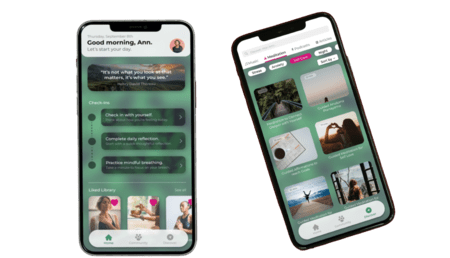

Mon Ami is an app that aims to support individuals that need an easy, free, and accessible platform to support them in times of stress and need. This project is done by the Creative Tech Design Outreach Team at the University of California, Santa Cruz.

The Problem
Life can be very stressful. From working professionals to busy students, we often forget to value ourselves and take care of our mental and physical health. The increase in mindfulness apps geared towards addressing individual struggles are a major step in providing relief. However, many of these products are often expensive, lack variety in content, and are often intended for solo use. How can we address and solve these shortcomings?
The Solution
We intend to increase accessibility of mindfulness resources to aid individuals in bettering mental health through Mon Ami, an all-in-one platform that consists of a variety of resources and tools meant to address and improve mental health. This platform also incorporates a community feature to allow users to form meaningful and supportive connections with others.
Much of the preliminary research part was done by my team, as I had joined a bit later in the project. This includes some individuals who dropped out of the project after this step. I was briefed on the progress as I entered the project.
As we were getting started with the project, we interviewed some potential users about their experiences using mental health focused apps. The people we interviewed were generally college to young adult aged individuals who regularly use or have used mindfulness apps. We took note of their experiences with the usability of various meditation and mental health focused apps (navigability, interaction, flow, and intuitiveness). We also asked their opinions and preferences of existing features as well as what features they would like to see more of.
Insights
The most commonly used features of the users we talked to were meditation and breathing exercises. Our participants also generally expressed a desire for more content and resource options and variety, which is something we intend to address and incorporate as we create our product.
Competitive Analysis
We looked at mindfulness apps already on the market to identify various features that we would like to iterate upon and incorporate in our product. We took a close look at what made these products successful, and and identified successful navigability, interactions, flow, intuitiveness, color scheme, interface design, emotions, and information presentation features.
Insights
Successful mindfulness apps most commonly included meditation and breathing exercises. Other common features include video and print resources, check-ins, reflections, and sleep features.
Ideate
Brainstorming Features
Based on the insights from our market research and user interviews, we identified key features that we wanted to include in our mental wellness platform. We brainstormed various pages, features, and styles that we wanted to incorporate into Mon Ami.
First Round Wireframing
This is where I entered the project, and after being briefed on the previous activity and contributing some of my own inputs, it was time to bring our visions to life! Once we had an idea of the app that we wanted to create, my team and I set to designing Mon Ami. Given our diverse visions and viewpoints, we decided to individually create low fidelity wireframes for Mon Ami, using our brainstorming and research to implement basic ideas for the home, community, discover, and profile pages.
Low Fidelity Wireframes
We then grouped together and evaluated each of our respective designs. We considered whether various features would be feasible to include in the overall app. We consolidated the features we liked best about each design into one final low-fidelity design.
Here is the low-fidelity prototype of Mon Ami! We prototyped the actions and tasks that we are interested in analyzing in out upcoming usability study.
Usability Test #1
Recognizing the importance of user research in the UX process, we wanted to see how our product would be used amongst real users, and figure out improvements or additions we would need to make. We tested our prototype on potential users who fit our targeted audience. We recruited high school to college aged individuals to interview over Zoom, and had them perform tasks on the Mon Ami low fidelity prototype. We also had our users complete a consent form as well as a post study evaluation form.
Goal
To understand the user's overall impression of the low fidelity Mon Ami platform, and attain feedback and insights.
User Tasks
We designated 5 tasks as the most critical tasks for the users to accomplish: 1. Completing the daily check in 2. Navigating to the music page and liking a song 3. Finding and joining a specific community 4. Creating a post on the community page 5. Navigating to the profile page and exploring the components within
Results
Quantitative Data
This is data we collected while observing our participants go through the tasks.
Qualitative Data
After the study, we asked our users to fill out the survey where they responded to a series of questions with 1-5, where 1 represents strongly agree and 5 represents strongly disagree.
Evaluations
For the most part, our participants were able to complete the tasks, and reported the tasks as being fairly simple. However, there are still notable areas that require improvement.
The main issue we realized from the study is that navigability is made more difficult by ambiguous and confusing features. We observed that for several tasks, many participants were uncertain of how to locate certain items or areas they needed to complete the task.
So, this is a key area that we need to address and iterate upon as we finalize our product.
Potential Solutions
Some potential solutions we brainstormed were to: • create a less overwhelming user interface by simplifying the structure and layout • ensure that the user doesn't have to go through so many steps to complete a task • make it more known to a user that they completed a task (i.e. microanimation upon completion)
Prototype
Design System
This is the design system we followed in designing Mon Ami high fidelity designs! We opted for a peaceful green color scheme with pops of fuschia to complement it. We also chose a standard text with consistent sizing throughout.
High Fidelity Designs - Round 1
Time to design again! Using our design scheme, we created some basic hifi designs for the home, community, and discover pages.
High Fidelity Designs - Round 2
After assessing our initial hifi designs, we changed up the Home and Discover pages to include more features.
Discover Page
Though we had been designing hifis for a while by this point, we struggled to decide on a Discover Page design even after multiple iterations. We wanted to add some type of filter and/or sort feature to allow for better search for desired content for a user, so we had attempted to incorporate those features in several ways. Finally, we narrowed our designs down to 2 variations of Discover to accommodate our ideas of filtering content.
As you can see, Version A has users select a category of the type of content they want, and then filter to their desired content subcategories using a scrollable navigation selection bar, with an individual sort by button and respective popup. Version B includes a navigation bar where the user can select the content category they want, and a separate filter button that includes a sort by feature as well as an option to filter by genre subcategories.
Discover Page A/B Testing
Feeling conflicted on which Discover page designs would offer the best search experience for users, we decided to conduct an A/B Usability study just for Discover to evaluate which features of each design would be the most optimal to include in Mon Ami.
Goal
For this study, we hope to attain feedback and insights from users to identify which content search, filter, and sort design would allow for the most optimal experience for users to find their desired content in Mon Ami's Discover.
User Tasks
We had our users perform the same tasks on both the Version A and Version B designs, and observed their experiences completing the same tasks on both versions. 1. Navigate to the podcasts page and find the anxiety subcategory 2. Sort music by length (shortest to longest) 3. Search for a specific meditation and like it
Results
We attained some qualitative data for this study as we observed users through 3 tasks for both versions.
Evaluations
Overall, this study was incredibly insightful and offered us a better understanding on how users search for desired content. Our study participants were generally able to follow through with the tasks and understood the purpose of the features we had included. However, there are notable areas that we must address and improve upon.
Iterate
Almost at the finish line! We addressed the problems that we had identified in the Discover A/B user study to iterate and finalize the Mon Ami Discover page designs. We also finalized the Community section, added some parts and completed the Home pages, and designed the high fidelity version of the Profile page.
Discover Page Iterations
Using our A/B usability study results and participant feedback, we redesigned the Discover page for Mon Ami by:
1. Including 2 navigation bars, one for the main categories that identify the type of content, and one scrollable bar for the genres of content of each main categories
2. Including a separate sort by option that offers a popup of sort options
3. Subsequent clear indication of how content has been sorted or what genre has been selected
4. Adding a little popup that indicates where liked items can be found when the user likes a content item
Completed Home Page
We selected our final colors and styling for the home page designs and ensured consistency throughout. We also decided to eliminate popups after the check-in in favor of guiding the user to where they could find their progress instead.
Finalized Community Page
We finalized our colors and styling for the community pages and ensure consistency throughout. In our hifi designs, we:
1. designed a navigation bar to separate content for feed, groups, and trending
2. designed a simple process to create a group
3. designed a simple process to make a post in a group
High Fidelity Profile Pages
For the profile pages, we applied our design system and continued using the navigation bar design that we had in other pages as well. We finalized 4 sections for the navigation bar: user profile, user posts, likes (for liked posts), and past check-ins data.
Final Product
Here is our final product! We prototyped the various features of the Home, Community, Discover, and Profile pages.
Reflection
Where do I even begin? Mon Ami is my first ever UX project, and it was through this project where I found my passion for User Experience Design. I learned so much about the UX process and had so much fun ideating, designing, and iterating on every part of this project. That being said, this project was not without its own obstacles. People came in and out to work on this project, and ultimately it came down to just me and 2 other people to bring this project into completion. This project also took a really long time to complete, as we often struggled to find time to come together as a team to work on it. In addition, we at times spent a lot of time designing and redesigning features based on our own preferences instead of our users' preferences, which did add time to our project timeframe.
A huge takeway from this project it is important to really consider the users in every aspect of designing. This will give us more insight into our users' wants and needs and allow us to iterate upon our designs so it is more functional and inclusive. In future projects, we aim to conduct multiple usability studies to attain valuable feedback to better our products for our users.
What's Next
We would love to expand upon Mon Ami's existing features to provide more content options and variety for users. We also would like to continue to brainstorm and incorporate other features that could address users' mental health and offer more support.